ТЕОРЕТИЧЕСКИЕ СВЕДЕНИЯ И РАСЧЕТНЫЕ ФОРМУЛЫ
Уравнения электрического равновесия напряжений и токов цепи в установившемся режиме можно записать аналитически во временной или комплексной форме и представить графически в форме векторных диаграмм.
При анализе цепей синусоидального тока необходимо иметь в виду следующее:
- индуктивное XL и ёмкостное XC реактивные сопротивления зависят от частоты f источника синусоидального напряжения u = Um sin(2πft + Ψu), т. е.
XL =ω L = 2π fL и XC = 1 / (ωC) = 1/(2π f C),
где ω = 2π f - угловая частота напряжения, рад/с; f = 1/T - циклическая частота, Гц; Т - период синусоидального напряжения, с; Ψu - его начальная фаза, рад или град;
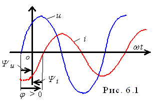
- в ветвях с реактивными элементами L и C между напряжением и током возникает фазовый сдвиг φ = Ψu - Ψi, где Ψi - начальная фаза тока (рис. 6.1). Угол φ (в рад или град) - алгебраическая величина, изменяющаяся в диапазоне от -90° (-π/2 рад) до +90° (+π/2 рад). Знак и величина угла зависят от типа и величины параметров последовательно соединённых элементов R, L и C ветви и частоты f напряжения.
В табл. 6.1 представлены типовые ветви схемы цепи синусоидального тока, векторные диаграммы напряжений и токов ветвей и углы сдвига фаз φ между их векторами. Анализ векторных диаграмм показывает, что резистивный элемент R является частотнонезависимым элементом: ток и напряжение на его зажимах совпадают по фазе (форма тока iR повторяет форму напряжения uR0), поэтому при определении (по осциллограммам) угла сдвига фаз между напряжением и током в ветвях цепи в качестве датчика тока обычно используют резистор с сопротивлением R0, напряжение uR0 = R0i с зажимов которого подавётся на один из входов осциллографа.
В индуктивном элементе ток отстаёт по фазе от напряжения на 90°, а в ёмкостном - его опережает на 90°. В RL-, RC- и RLC-ветвях угол сдвига фаз зависит от значения параметров элементов ветви и определяется, в общем случае, по формуле φ = arctg(XL - XC )/R.
Таблици 6.1
Номер ветви (рис. 6.2) |
Элементы ветви |
Векторная диаграмма |
Угол φ = Ψu - Ψi |
1 |
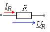 |
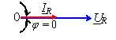 |
φ = 0 |
2 |
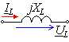 |
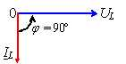 |
φ = 90° (π/2) |
3 |
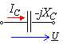 |
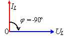 |
φ = - 90° (-π /2) |
4 |
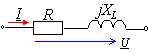 |
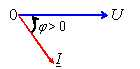 |
φ = arctg(XL/R) |
5 |
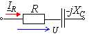 |
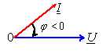 |
φ = ( arctg(-XC/R) |
6 |
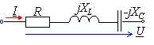 |
а) XL > XC; см. ветвь 4; б) XL < XC; см. ветвь 5; в) XL = XC; см. ветвь 1 |
φ = arctg[(XL -XC)/R] |
Значение угла φ ветвей схемы цепи определяют косвенным методом, измеряя временные интервалы на осциллограммах, т. е.
|φ| = 360t/T,
где t - временной интервал (рис. 6.2) между нулевыми значениями синусоид напряжения (синего цвета) и тока (красного цвета); угол φ берется со знаком "плюс", если ток отстаёт по фазе от напряжения (см. рис. 6.2), и со знаком "минус" - если ток опережает по фазе напряжение.
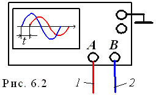
При измерении интервала времени t целесообразно использовать визирные линии (визиры), расположенных слева и справа экрана осциллографа, на вход канала А которого будем подавать напряжение uR0, пропорциональное току ветви (цвет провода 1 примем красный, а потому цвет осциллограммы тока на экране дисплея будет красным), а на вход канала В - напряжение u ветви (цвет провода 2 примем синий).